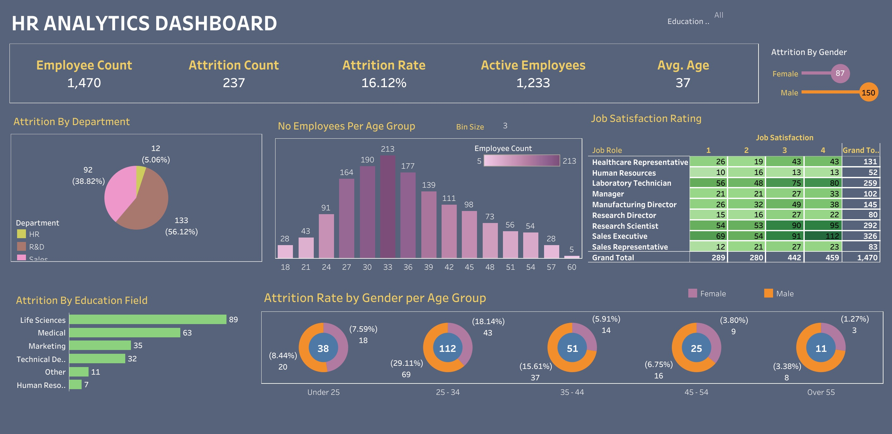
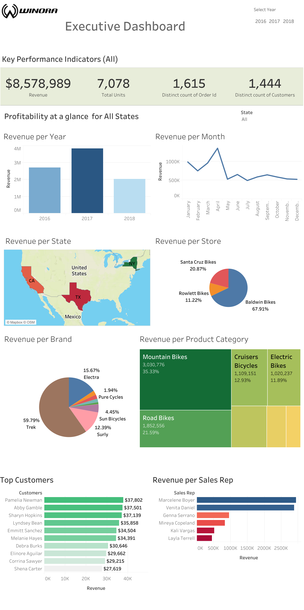
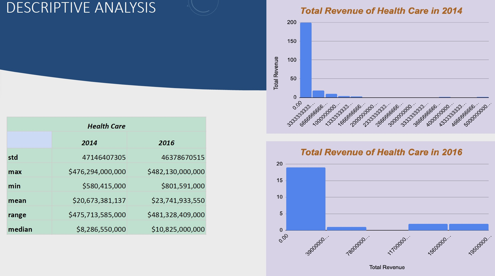

In this project, data was sourced from Kaggle's dataset platform, I cleaned the data using Excel, imported into Tableau and generated insights into Attrition challenges the company was facing.
This dashboard helped management take critical decisions into solving these problems by targeting areas of interest that were highlighted.


In this project dataset was extracted from Winora Retail Database. Data was cleaned, analysed and created an interactive dashboard to be presented to Management with
insights of revenue generated from 2016 to 2018 with respect to various areas of interest.

ForestQuery was on a mission to combat deforestation around the world and to raise awareness
about this topic and its impact on the environment. The data analysis team at ForestQuery
obtained data from the World Bank that included forest area and total land area by country and
year from 1990 to 2016, as well as a table of countries and the regions to which they belong.
The data analysis team used SQL to bring these tables together and to query them in an
effort to find areas of concern as well as areas that presented an opportunity to learn from
successes.
A Call Center needed a cleaned Data records of customers that could be contacted. I imported the data set
into Python, cleaned and manipulated the data and presented the final solution as requested.

In this project, I analyzed real-life data from the New York Stock Exchange. I extracted a subset of a large dataset provided by Kaggle that contains historical financial data from S&P 500 companies.